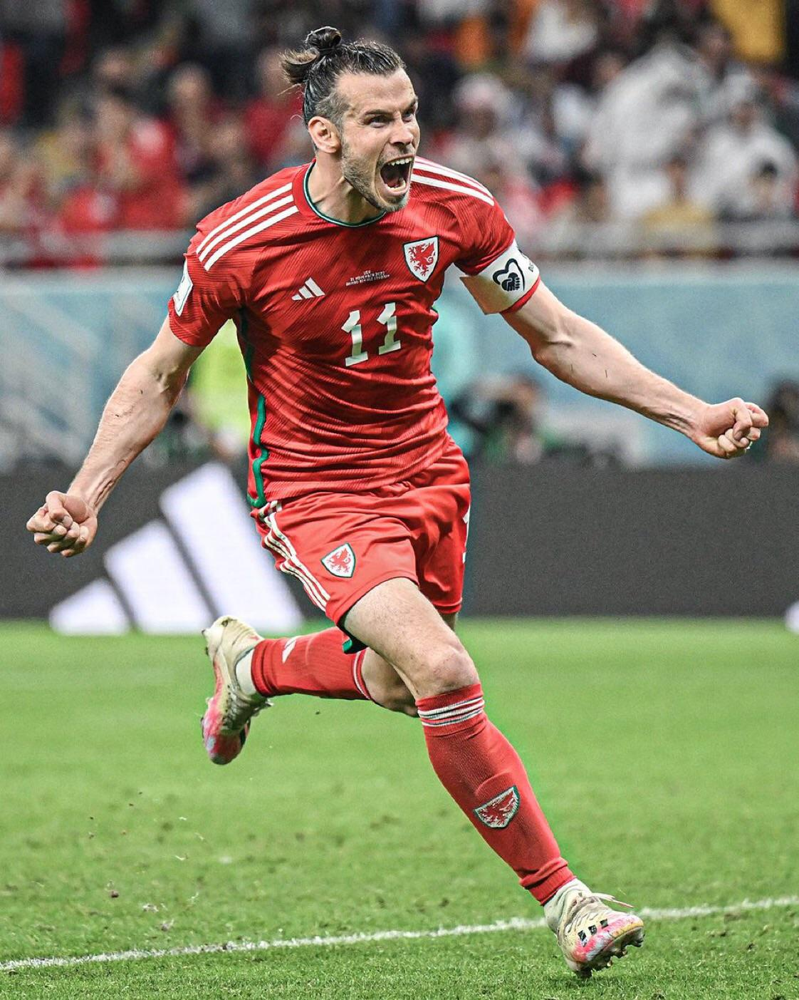

Footballer | golf player | Commentator
Gareth Bale is a former professional footballer from Wales, born on July 16, 1989. Known for his incredible speed, long-range shooting, and powerful left foot, Bale began his career at Southampton before moving to Tottenham Hotspur. He rose to global fame after joining Real Madrid in 2013 for a then-world-record transfer fee. During his time at Madrid, he won several major trophies, including 5 UEFA Champions League titles. Bale was also the face of Welsh football, playing a crucial role in helping Wales reach the Euro 2016 semi-finals. After a successful career, he announced his retirement from football in January 2023. Off the field, Bale is also passionate about golf and charity work.Gareth Bale is one of the most talented and successful footballers to emerge from Wales. Born on July 16, 1989, in Cardiff, he began his career at Southampton as a left-back, but his explosive pace and technical ability soon saw him transition into a winger. He gained fame at Tottenham Hotspur, especially during the 2010–2013 seasons, where he scored stunning goals and became one of the Premier League’s most exciting players. In 2013, Bale transferred to Real Madrid for a then-world-record fee of over €100 million. At Madrid, he played alongside stars like Cristiano Ronaldo and Karim Benzema, winning 5 UEFA Champions League titles, 3 La Liga titles, and scoring in multiple finals — including a famous bicycle kick goal in the 2018 UCL final. Bale also had a huge impact on the Wales national team, leading them to the Euro 2016 semi-finals and Euro 2020 knockout stages. He became Wales’ all-time leading scorer and was known for his leadership and passion. After brief returns to Tottenham and a final stint with LAFC in the USA, where he won the MLS Cup in 2022, Bale announced his retirement from professional football in January 2023. Beyond football, he is known for his love of golf, calm demeanor, and involvement in charitable activities.
southamptonfc| tottenhamhotspur| real madrid| los angeles| wales